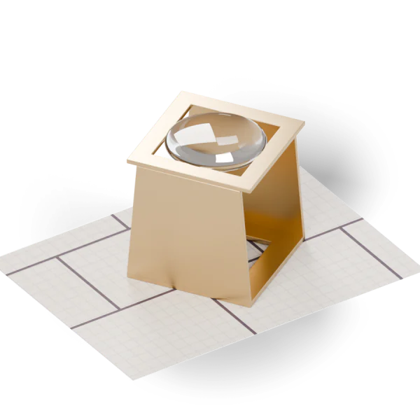

Help and contact
Support
Questions, bugs or wishes for SmooGo Note? Write to us – a person answers.

How do I report a bug?
Please include the app version, your device with its iOS, iPadOS or macOS version, and the steps that led to the problem. The version is shown in the settings under Über SmooGo Note (About).
A screenshot helps if it shows no personal content. Please don’t send passwords or whole notebooks unless we ask for them.
How do I back up my notes?
On iPhone and iPad, open the settings and look under Deine Bibliothek for Bibliothek exportieren (export library) and Bibliothek importieren (import library). On the Mac, use the Ablage (File) menu.
The export contains every notebook with text, drawings, images, PDFs and recordings. Importing adds its content; your existing notes stay as they are.
How do I turn on iCloud sync?
In the app’s settings, under iCloud, turn on Zwischen Apple-Geräten synchronisieren (sync between Apple devices) on every device signed in to the same Apple Account. Your library is then also kept in your private iCloud database.
You can turn sync off at any time; the notes on the device remain. Without a network the app keeps working locally and syncs later; the iCloud line in the settings shows the status.
Can I draw with my finger?
On iPad the Apple Pencil draws and a finger scrolls. If you work without a Pencil, turn on Mit dem Finger zeichnen (draw with finger) in the drawing toolbar.
Double-tap and squeeze follow your system setting. Hold a stroke for a moment at its end and it snaps to a line, rectangle or ellipse.
How do slides beside my notes work?
Choose Daneben öffnen (open beside) on a PDF. New paragraphs and strokes then link to the visible slide, and a marker later takes you back to it. A tap on the linking hint pauses linking; another tap resumes it.
Mitschrift mit Folien (notes with slides) creates a PDF that places every linked slide beside your notes.
Recording doesn’t start.
The system asks for microphone access on your first recording. If you declined, allow it on iPhone and iPad in Settings › Privacy & Security › Microphone, on the Mac in System Settings › Privacy & Security › Microphone.
How do I change my field of study?
On iPhone and iPad in the settings under Fachrichtung; on the Mac with Fachrichtung wechseln in the sidebar. Colours and teaching model change; your notes stay unchanged.
Purchases, refunds and billing
Apple handles App Store purchases. For billing or refunds, visit reportaproblem.apple.com.